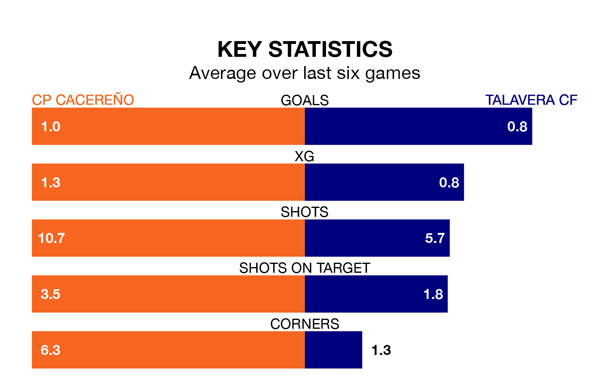

Talavera CF travel to CP Cacereño on Sunday in the Segunda División RFEF Group 5.
The visitors come into the game on the back of a defeat in their last match, having lost to CD Badajoz 2-1 at home, with a goal from David Morante Bernal.
CP Cacereño also lost their last match, 1-0 against Ursaria.
With 29 goals in 26 games so far this season, CP Cacereño are scoring at the league's average rate with 1.1 goals per game. And they are conceding more than average, letting in 30 goals at a rate of 1.2 per game.
Talavera, meanwhile, are below average scorers, with 1.0 goal per game. They have conceded 0.7 goals per game.
The hosts are in mixed form in the Segunda División RFEF Group 5, with two wins and three draws from their last six games.
With a win and two draws over that period, the away side's form is worse – they have taken five points from 18, compared to CP Cacereño's nine.
Talavera are seventh in the table after 26 games, of which they have won 10 and drawn eight, earning 38 points.
CP Cacereño are three places behind Talavera in 10th, with eight wins and 10 draws putting them on 34 points.
Updated: 15:10 (UTC), 15/03/24